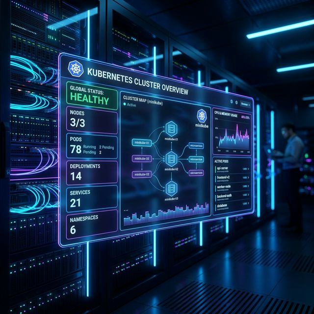

How to Enable Kubernetes Dashboard on Minikube (Step-by-Step Guide)

If you’re running Kubernetes locally with Minikube, the Kubernetes Dashboard provides a clean web UI to monitor and manage your cluster. The good news is that enabling it is straightforward using Minikube’s built-in add-ons.
This guide walks you through the exact steps—simple, practical, and ready to run.
🔧 Prerequisites
Make sure you have:
- Minikube installed
- kubectl installed
- A working local environment (Docker/VirtualBox/etc.)
Start your cluster if you haven’t already:
minikube start📦 Step 1: Check Available Add-ons
Minikube comes with several built-in add-ons, including the dashboard.
Run:
minikube addons listThis shows all available add-ons and whether they are enabled or disabled.
📊 Step 2: Enable Metrics Server
The metrics-server is required for resource usage (CPU/memory) in the dashboard.
minikube addons enable metrics-server🖥️ Step 3: Enable Kubernetes Dashboard
Now enable the dashboard itself:
minikube addons enable dashboard✅ Step 4: Confirm Dashboard is Enabled
Re-run the add-ons list to verify:
minikube addons listYou should now see both:
metrics-server→ enableddashboard→ enabled
🚀 Step 5: Launch the Dashboard
Finally, start the dashboard:
minikube dashboardThis will:
- Start a proxy
- Open the dashboard in your default browser
🎥 Video Demonstration
Watch the step-by-step walkthrough below:
🧾 Full Command Summary
minikube start
minikube addons list
minikube addons enable metrics-server
minikube addons enable dashboard
minikube addons list
minikube dashboard🧠 Final Thoughts
Using the Kubernetes Dashboard in Minikube is one of the easiest ways to visualize your cluster. With just a few commands, you can:
- Monitor workloads
- View resource usage
- Debug applications visually
If you’re just getting started with Kubernetes, this is a great tool to keep in your workflow.